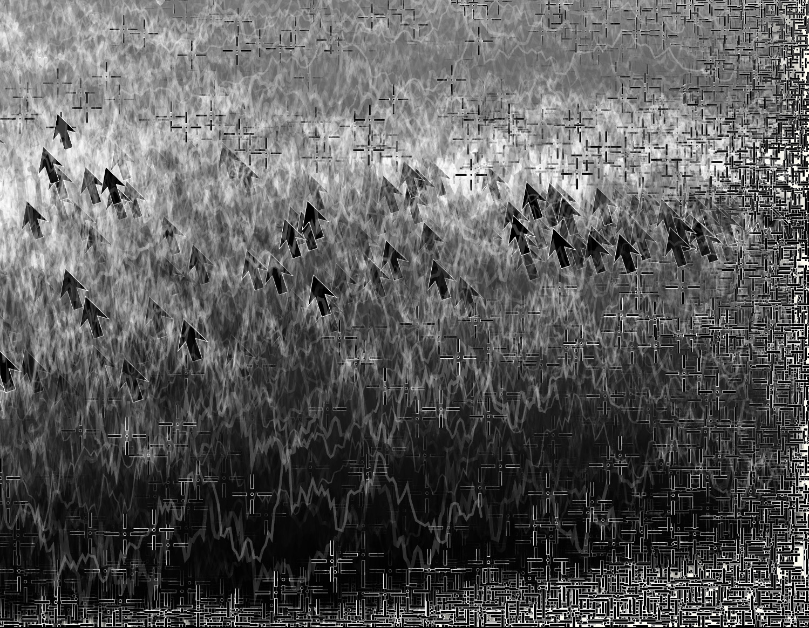

A commissioned work, Anthropometrics responds to Yves Klein’s Anthropometries, from 1960, which was a kind of performance piece in which naked women dipped in blue paint made impressions of their bodies on a canvas. You can watch footage of Anthropometrieshere.
Instead of naked female models, I used data from my body – sleep data, daily steps and heart rate – to render an image. Data points connected by randomized lines give an impression of flowers, a traditionally feminine form. The work starts with the kind of spinning loading symbols that typically display while waiting for data to load.
I inscribed two Anthropometrics as Ordinals, Bitcoin-based NFTs, one on a dark background (seen above), and the other on a light background:
“Several People Typing”, my final piece for the Vertical Crypto Art Residency, is a nod to the history of scrapbooks and photo collages – deemed “women’s work” or “women’s accomplishments” during the Victorian era. These collages were often about identity, memory and the experience of new technologies of the day.
Algorithmically generated and coded in p5js, the collage combines snippets from a variety of sources: text from the highly active VCA discord during the residency; tweets from the @vcaresidency feed; IRL objects (e.g. a ring light, a trackball mouse) that sat on my desk during the residency; and flow fields “like” ❤️ hearts as well as profile pictures of other artists in the residency.
The pfps (profile pictures) become visible up close in a print, or when you zoom into the digital image. They allude to photographic portraits of the Victorian era – a new and accessible technology at that time – that were often cut out and pasted into women’s collages.
The background displays layered graphs of everyday data – e.g. the temperature in NYC, and price charts for ETH, XTZ and the S&P. On the lower right sits an ellipsis, a symbol ever-present in real-time chat that shows when a conversation is paused… while people are typing.
“Several People Are Typing” was published on Objkt.
“Proof of What Happened” (a phrase from the bitcoin whitepaper) combines a range of data and digital artifacts — including BTC price charts, heartbeat graphs, standard arrow and heart icons — to create an image somewhere between online and IRL.
If you look closely, you’ll see it’s comprised of snippets of historical BTC price charts.

“Proof of What Happened” was inscribed and then sold as an ordinal on the Bitcoin blockchain here.
After Even Night takes the viewer on a kind of journey: An endlessly changing view, as if through the window of a train, through a kind of abstract landscape that mixes digital and real life. Stop any time to take a picture.
Scrolling past in unexpected yet familiar ways, After Even Night illustrates our strange relationship with time and space; how memory makes that relationship less linear and defined, melding one place with the next, merging past and present.
Collectors can click on the animation at any time to stop, and then double click to download an image – but the journey continues, layering and evolving, indefinitely. A few travel pics:
Pressed is a series of two 1 of 1s – Pressed Spring and Pressed Fall.
The digital equivalent of a pressed flower, an algorithm written in C++ collapses a video of a walk through the woods (25 seconds, 1500 frames) into a single image.
At Chanel stores in Beverly Hills and Hong Kong, an abstracted Chanel-like fabric weaves the silhouettes of viewers into its own shifting, colorful threads. Above is footage from the opening party in Beverly Hills, showing the piece in action.
The piece responds in real time to the motion of visitors ascending and descending a staircase positioned in front of the screen.
Commissioned by Peter Marino Architects and Chanel.
At the Novotel Hotel in Times Square, this monumental-scale video collage (displayed across two columns) shows bathers around the world leaping, dashing, falling and ice-carving their way into the brisk waters of a New Year.
Displayed in the lobby of Radisson Blu, Minneapolis, “Cants and Flitches” is inspired by the history of logging and mills that built and shaped Minneapolis. (In logging terminology “cants” are unfinished logs to be processed; “flitches” are unfinished planks.)
The video is generated by a kind of digital sawmill — an algorithm that deconstructs and reconstructs images of trees and parts of trees – to create new, semi-natural, harmonious images.
Commissioned by the Australian Center for Moving Image in Melbourne, this interactive piece uses historical footage of the railroad platform that once occupied this site. As visitors to the museum descend a stairway inside the main gallery, their motion reveals a video of commuters moving through this space a hundred years ago.
The footage above (although very overexposed) gives a sense of how the piece appeared on location.
My practice is rooted in the tension between order and chance, structure and spontaneity. Working with code as both medium and material, I construct systems whose visual outcomes resist complete control. Within these rule-based processes, unexpected forms emerge, allowing logic to become gestural and the algorithm to function as a site of improvisation.
Drawing on a background in media art, technology, and data systems, my work encompasses motion-responsive architectural installations and on-chain generative works. I approach programming as a form of mark-making: conditional statements become compositional decisions, loops establish rhythm and repetition, and accumulated fragments of digital culture are transformed into fluid fields of color, movement, and form.
Through this process, I explore how lived experience is increasingly shaped by systems of data, computation, and exchange. Bringing the ordered languages of economics and technology into dialogue with the instability of human perception, my work considers the ways contemporary life unfolds between the rational and the unknowable. The resulting works are not simply made with digital tools; they arise from the particular conditions, contradictions, and possibilities of the digital age.
Option 2: Narrative & Polished
My entry into digital art began with a happy accident: a piece of code left running on a monitor while I stepped out for a sandwich, resulting in a composition I hadn’t planned. That moment revealed a captivating alchemy—the ability to write strict, logical commands that yield surprising, illogical results. I was hooked.
My work explores how human life evolves alongside, and is shaped by, emerging technology. Rooted in generative algorithms and computational media, my practice spans interactive architectural installations—such as dynamic displays that translate human movement into digital weaving—to fully on-chain, generative code. Informed by a background that bridges art, technology, and economics, I treat code not just as a tool, but as the medium itself. Algorithms serve as brushes, control structures function as paint, and data becomes cultural artifact.
From early video motion experiments to recent generative collections, my work consistently plays at the border between order and chaos, IRL and digital. I create collages and algorithmic systems that would be impossible with traditional materials, capturing the friction, nuance, and speed of what it means to live right now.
Option 3: Concise & High-Impact
My practice explores the productive friction between logical code and spontaneous art. Writing algorithms that produce surprising, unpredictable visual outcomes, I investigate how contemporary life evolves alongside emerging technologies.
Drawing from a background in media art, technology, and data systems, my work ranges from motion-responsive architectural installations to on-chain generative code. In my generative pieces, the algorithm itself becomes the subject: if-then statements act as brushes and loops function as paint, transforming raw syntax and modern digital debris into fluid visual narratives. By bridging the structured world of economics and logic with the chaotic nature of human experience, I create art uniquely native to the digital age.